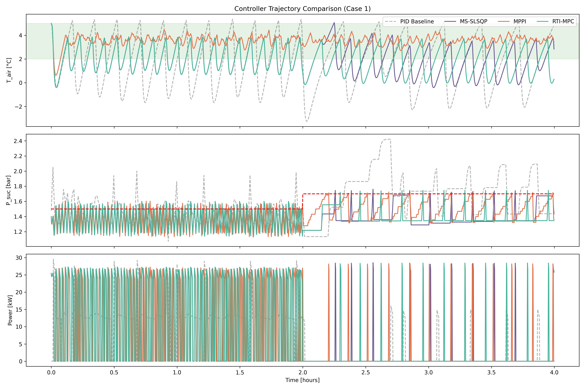

Trajectory Optimization for Supermarket Refrigeration
MPC with Hysteresis Layer for Hybrid Discrete-Continuous Control
All MPC methods outperform PID on both Tair and Psuc constraints. | Key insight: Hysteresis layer translates continuous optimization to discrete actuation. | Comparison of MS-SLSQP, MPPI, and RTI-MPC.
1 - Motivation
The Coordination Problem
Commercial refrigeration accounts for ~40% of a supermarket's electricity consumption. Multiple display cases share a compressor rack, creating a coupled control problem.
CURRENT PRACTICE
Each case runs independent hysteresis control
Valves synchronize: all open/close together
Pressure swings force compressor cycling
Energy waste from start/stop losses
No anticipation of thermal dynamics
MPC ADVANTAGES
Coordinate valves to avoid synchronization
Predict thermal inertia over horizon
Enforce temperature bounds directly
Smooth compressor operation
Optimize energy vs. constraint trade-off
Setting: 2 display cases, 2 compressors (each 50% capacity), 4-hour simulation with day/night profile. Constraints: Tair ∈ [2, 5]°C, Psuc ≤ 1.7 bar.
2 - Physical System
Vapor Compression Cycle
Refrigerant (R134a) evaporates inside display case coils, absorbing heat from the air. Vapor flows to a shared manifold, is compressed, and heat is rejected to the environment.
System Architecture: Display Cases + Compressor Rack
Counterflow architecture: Liquid refrigerant enters display cases, evaporates (absorbing heat), flows as vapor to the suction manifold. Compressors raise pressure for heat rejection. Valve timing and compressor capacity determine system efficiency.
3 - System Dynamics
Coupled Thermal-Pressure ODEs
Each display case has three thermal masses (goods, air, wall) coupled through heat transfer, plus refrigerant mass with switched dynamics.
Coupling via suction manifold: All display cases share $P_{\text{suc}}$. The manifold pressure evolves as:
$\dot{P}_{\text{suc}} \propto (\text{vapor in from cases}) - (\text{vapor out via compressors})$.
4 - State & Control
Hybrid System Structure
The system is hybrid: continuous temperature/pressure dynamics with discrete valve switching.
Compressor: $\text{comp} \in [0, 100]\%$ (continuous, quantized to 0/50/100)
2-5°C
Tair constraint
≤1.7 bar
Psuc limit
10 s
Discretization Δt
3 min
MPC horizon
5 - Problem Formulation
Nonlinear Program (Multiple Shooting)
Multiple shooting treats both states and controls as decision variables, enabling direct enforcement of path constraints. Solved every 3 minutes via receding horizon.
DECISION VARIABLES
Controls (applied to system)
$$u_{0:N-1} = \{u_0, u_1, \ldots, u_{N-1}\}$$
where $u_k = [\text{valve}_1, \text{valve}_2, \text{comp}]^\top$
States (for constraint enforcement)
$$x_{1:N} = \{x_1, x_2, \ldots, x_N\}$$
where $x_k \in \mathbb{R}^9$ (temps, masses, pressure)
Critical: All three methods use a shared hysteresis layer that translates continuous optimizer outputs to discrete valve (0/1) and compressor (0/50/100%) actuation. Without this layer, pure optimization fails on this hybrid system.
7 - Results
Controller Comparison (4-Hour Cycle)
All three MPC methods with hysteresis layer outperform PID on both temperature and pressure constraints. Day/night transition at t=2h.
Controller Trajectory Comparison: All MPC Methods Satisfy Constraints

Top: Tair ∈ [2,5]°C. All MPC methods (colored) stay within the green band; PID (gray) undershoots to -2°C. Middle: Psuc ≤ Pref. MPC methods track the limit; PID violates at night. Bottom: Power consumption with on/off cycling.
✓
Tair (All MPC)
✗
Tair (PID)
✓
Psuc (All MPC)
✗
Psuc (PID)
8 - Analysis
Key Insight: Hysteresis Layer for Hybrid Systems
Hysteresis means using different thresholds for turning ON vs OFF. Like a thermostat: heat ON at 18°C, OFF at 22°C. This "dead band" prevents rapid on/off chattering.
Hysteresis Control: Different Thresholds for ON vs OFF
Hysteresis prevents chattering: Without dead bands, the system would rapidly switch ON/OFF at a single threshold, causing wear and instability. The gap between ON and OFF thresholds ensures stable cycling.